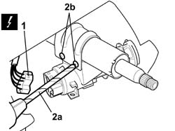
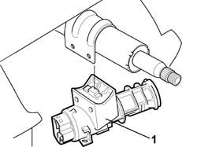

5520A10 ignition switch assembly - r+r
- Path
- Procedures > 55 ELECTRICAL EQUIPMENT > 5520 ENGINE STARTING > 5520A ignition switch > 5520A10 ignition switch assembly - r+r
- Kind
- repair procedure (removal / refitting; the operation number is the code)
- Applies to
- all engines; all production periods
- Interactive page
- https://sloeber94.github.io/elrnDB-fPnd/en/#/2752950
Applies to: all engines; all production periods
Applies to: all engines; all production periods
 Removing
Removing
 Refitting
Refitting4110A10 steering wheel - r+r for replacement or checks
7040A26 steering column trim - r+r
5580E08 aerial for alpha code - r r
5550A10 stalk unit assembly - r+r
1. Disconnect the electrical connections.
 | Name | Connector |
|---|---|---|
1 | Ignition switch | H1A |
| Name | Connector |
|---|---|---|
1 | Ignition switch | H1B |
2. Using a drill with a suitable bit (2a), remove the shear bolts (2b) of the ignition switch complete with lock barrel.

Applies to: all engines; all production periods
1. Remove the ignition switch complete with lock barrel.

Applies to: all engines; all production periods
Refitting
RemovingFit the ignition switch complete with lock barrel.
Screw on some new shear bolts.
Connect the electrical connections.
| Name | Connector |
|---|---|---|
- | Ignition switch | H1A |
| Name | Connector |
|---|---|---|
- | Ignition switch | H1B |
5550A10 stalk unit assembly - r+r
Check that the steering column switch unit is not damaged and, if necessary, conduct an electrical test on it.
5580E08 aerial for alpha code - r r
7040A26 steering column trim - r+r
4110A10 steering wheel - r+r for replacement or checks
Connect the battery terminals.
Check the operation of the Air Bag system using the Examiner or other diagnostic equipment.
Topics linked from this page (5)
- 4110A10 steering wheel - r+r for replacement or checks
- 5550A10 stalk unit assembly - r+r
- 5580C18 air bag module - r+r
- 5580E08 aerial for alpha code - r r
- 7040A26 steering column trim - r+r